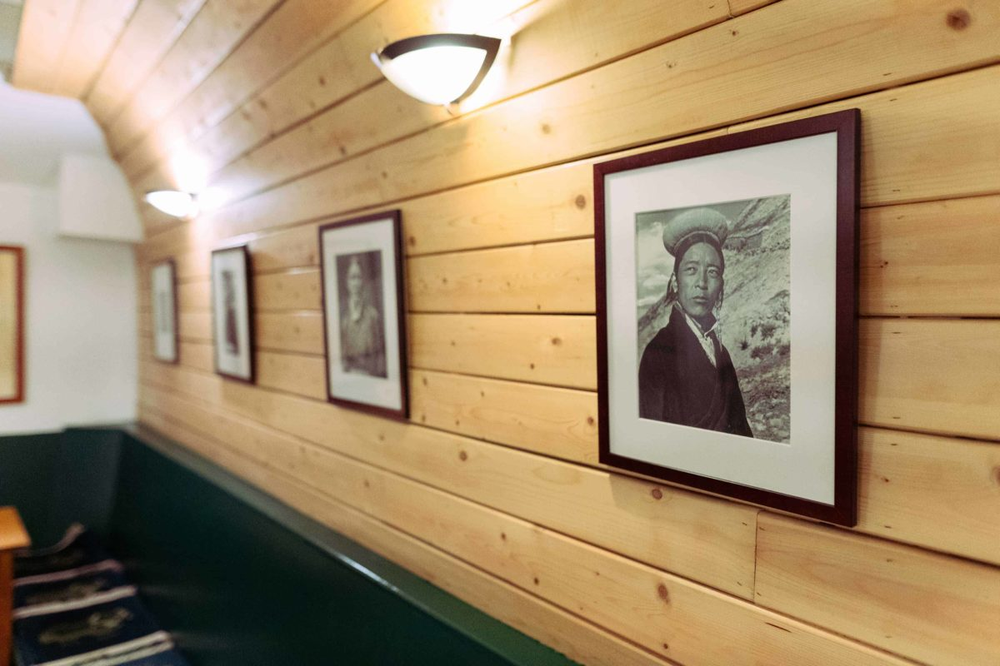
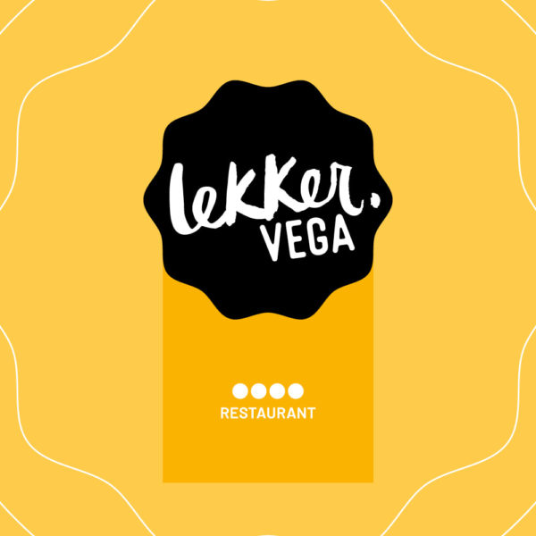

Een van de oudste eetgelegenheden aan de werf
“Mijn restaurant scheelt toch zeker een koe per week.”
Namgyal Lhamo
De Werfkring is een van de oudste eetgelegenheden aan de historische Utrechtse grachtenwerven. Het menu is sinds 1981 nauwelijks veranderd. De producten die in De Werfkring gebruikt worden zijn zoveel mogelijk biologisch. Granen, kruiden, peulvruchten, gestoofde groente en rauwkost vormen nog steeds de basis van het menu. Namgyal bracht hier en daar ook een enkel accent aan uit de Indiase en Tibetaanse keuken.
- 1976Claziena Verdorst, bekend van het kookboek Aan Tafel bij Moeder Aarde, begint De Werfkring.
- 1981Namgyal Lhamo neemt het restaurant over, samen met haar zusje Chukie.

Lekker Vega keurmerk Goud
We hebben het keurmerk Goud gekregen van Lekker Vega. Dit houdt in dat onze menukaart bestaat uit 100% vegetarische gerechten, waarvan minimaal 50% plantaardig.